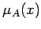

Inhalt Index DeskTop Bronstein

 Algebra und Diskrete Mathematik Fuzzy-Logik Grundlagen der Fuzzy-Logik Interpretation von Fuzzy-Mengen (Unscharfe Mengen)
Algebra und Diskrete Mathematik Fuzzy-Logik Grundlagen der Fuzzy-Logik Interpretation von Fuzzy-Mengen (Unscharfe Mengen)


Nimmt eine Kenngröße linguistische Werte wie z.B. ,,niedrig``, ,,mittel`` oder ,,hoch`` an, so bezeichnet man sie als linguistische Größe oder linguistische Variable. Jeder linguistische Wert ist durch eine Fuzzy-Menge beschreibbar, beispielsweise durch einen Funktionsgraphen mit einem bestimmten Träger. Die Anzahl der Fuzzy-Mengen (im Falle von ,,niedrig``, ,,mittel``, ,,hoch`` sind es drei) ist nicht probleminvariant.
In (E2) wird die linguistische Variable mit x bezeichnet. Beispielsweise steht x für Temperatur, Druck, Volumen, Frequenz, Geschwindigkeit, Helligkeit, Alter, Abnutzungsgrad etc., aber auch für medizinische, elektrische, chemische, ökologische etc. Variable.
| Beispiel |
|
Mit Hilfe der Zugehörigkeitsfunktion  kann man den Zugehörigkeitsgrad eines scharfen Wertes zu einer unscharfen Menge bestimmen. Die Modellierung einer Prozeßgröße, z.B. der Temperatur, mit dem linguistischen Wert ,,hoch`` durch eine unscharfe Menge in Form einer trapezförmigen Abhängigkeit, wie sie die folgende Abbildung zeigt, liefert: Repräsentiert x die Temperatur und somit der Wert |